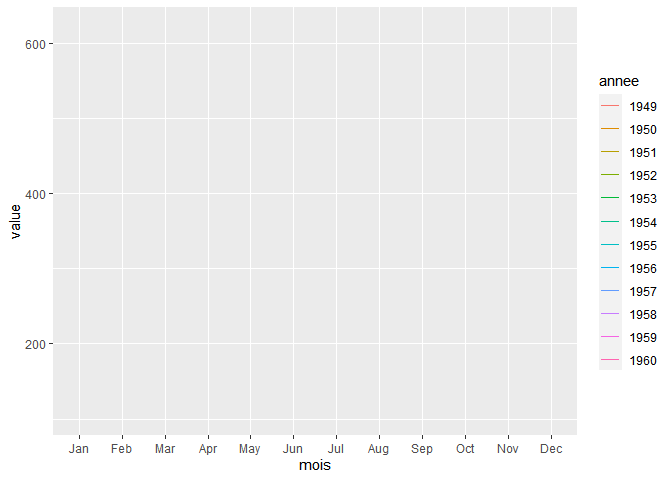
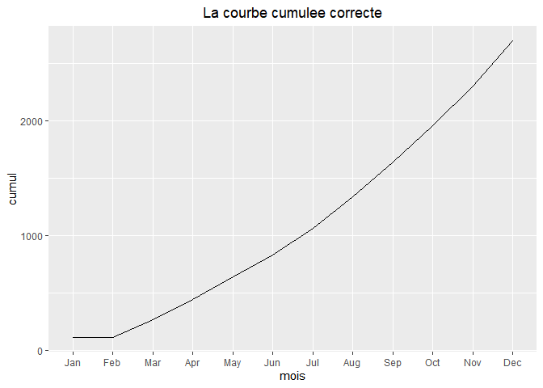

Introduction
Le package ggplot2 a beaucoup de points forts par rapport a un graphique realise en R base (syntaxe coherente d’un type de graphique a un autre, gestion automatique des marges, legende positionnee par defaut en dehors du graphique, …)
Mais il y a quelques situations delicates illustrees ci-dessous, avec les solutions !
Difficultes specifiques a ggplot2
Les courbes reduites a un point
Le message qui accompagne le graphique vide suivant n’est pas tres eclairant.
library("dplyr")
library("tidyr")
library("ggplot2")
# pour centrer les titres des graphiques ggplot2
theme_update(plot.title = element_text(hjust = 0.5))
dtf = matrix(AirPassengers, ncol = 12, dimnames = list(1949:1960, month.abb)) %>%
as.data.frame() %>% tibble::rownames_to_column(var = "annee") %>% pivot_longer(cols = Jan:Dec, names_to = "mois") %>%
mutate(mois = factor(mois, levels = month.abb))
collect_messages <- catchr::make_catch_fn(message = c(collect, muffle))
gg = ggplot(dtf, aes(x = mois, y = value, col = annee)) + geom_line()
# pour envoyer le message dans ce html plutot que dans la console de Rstudio ...
collect_messages(print(gg))$message[[1]]$message[1] "geom_path: Each group consists of only one observation. Do you need to adjust\nthe group aesthetic?\n"
On obtient l’explication precise en executant la commande ?aes_group_order. Le package ggplot2 croise toutes les variables qualitatives et trace une courbe par croisement. C’est souvent ce qu’on veut mais pas toujours : ici il croise les 12 annees (format character) et les 12 mois (format facteur), on a donc 144 courbes reduites a un point, et comme on n’a pas ajoute + geom_point() au graphique on ne voit meme pas les points…
Pour corriger le probleme il suffit de lui indiquer explicitement les groupes avec la variable group (group = 0 donnerait une seule courbe). Ici on veut une courbe par anne, et on utilise la palette de couleurs par defaut du package viridis (cf hebdomadR precedent sur les couleurs) :
ggplot(dtf, aes(x = mois, y = value, col = annee, group = annee)) + geom_line() +
scale_color_viridis_d()Ma couleur ne s’applique pas
Les barres ne deviennent pas bleues mais sont bordees par du rouge … entre autres parce que ggplot2 s’attend a recevoir dans le parametre col de la fonction aes le nom d’un champ sans guillemets, pas une couleur constante entre guillemets. Il lui attribue alors la 1ere couleur de sa palette par defaut, qui est le rouge.
ggplot(dtf %>% filter(annee == "1950"), aes(x = mois, y = value, col = "blue")) + geom_col()Les barres ne deviennent pas bleues mais sont bordees par du bleu, c’est un peu mieux … soit en utilisant la fonction speciale I dans aes soit en sortant le parametre col de la fonction aes :
ggplot(dtf %>% filter(annee == "1950"), aes(x = mois, y = value, col = I("blue"))) + geom_col() +
ggtitle("Avec la fonction I")ggplot(dtf %>% filter(annee == "1950"), aes(x = mois, y = value)) + geom_col(col = "blue") +
ggtitle("Avec col dans geom_point")Il fallait utiliser le mot-cle “fill” pour le remplissage, le parametre col ne concerne que les bords et ne fonctionne donc bien qu’avec les points et les courbes.
ggplot(dtf %>% filter(annee == "1950"), aes(x = mois, y = value)) + geom_col(fill = "blue") +
ggtitle("Avec fill dans geom_point")
Et maintenant qu’on a resolu le probleme, on peut aussi faire mieux. Pour avoir une couleur par mois de l’annee par exemple :
ggplot(dtf %>% filter(annee == "1950"), aes(x = mois, y = value, fill = mois)) + geom_col()On peut aussi personnaliser les couleurs en fournissant un vecteur nomme qui donne la correspondance mois / couleur.
mes_couleurs = c("blue", "darkslateblue", "cornflowerblue", "bisque", "antiquewhite",
"forestgreen", "green", "lightgreen", "coral", "darkorange", "gold", "yellow")
names(mes_couleurs) = month.abb
ggplot(dtf %>% filter(annee == "1950"), aes(x = mois, y = value, fill = mois)) +
geom_col() + scale_fill_manual(values = mes_couleurs) + theme_void()Problemes non specifiques a ggplot2 ou R
Les courbes avec des points manquants
La courbe semble normale, mais si on est attentif on voit qu’il manque un mois dans la legende.
dtf_NA = dtf %>% filter( (annee == "1950" & mois != "Feb"))
ggplot(dtf_NA, aes(x = mois, y = value, group = annee)) + geom_line() + ggtitle("La courbe")Avec l’option drop = FALSE pour l’axe des abscisses on garde toutes les modalites du facteur mois, meme celles qui ont disparu quand on a filtre la table initiale, et tout semble OK.
dtf_NA = dtf %>% filter( (annee == "1950" & mois != "Feb"))
ggplot(dtf_NA, aes(x = mois, y = value, group = annee)) + geom_line() + ggtitle("La courbe") +
scale_x_discrete(drop=FALSE)Mais avec des barres plutot qu’une ligne on voit le probleme : la courbe devrait etre a 0 en fevrier, la courbe a simplement relie directement janvier a mars.
ggplot(dtf_NA, aes(x = mois, y = value, group = annee)) + geom_col() + ggtitle("Les barres") +
scale_x_discrete(drop=FALSE)Si on doit absolument avoir des courbes plutot que des barres, la solution vient de la fonction complete du package tidyr qui va completer le dataframe en croisant toutes les valeurs de annee avec toutes les modalites du facteur mois. Et pour les combinaisons qui ne sont pas presentes dans notre table filtree, on met 0 comme valeur de la courbe avec le parametre list(value = 0).
dtf_complet = dtf_NA %>% complete(annee, mois, fill = list(value = 0))
ggplot(dtf_complet, aes(x = mois, y = value, group = annee)) + geom_line() +
ggtitle("La courbe correcte") + scale_x_discrete(drop=FALSE)Les courbes cumulees avec des points manquants
C’est une situation qui se presente aussi de temps en temps : on a par exemple des operations financieres qui n’ont pas lieu tous les jours (depots, retraits, …), et on veut obtenir le cumul quotidien de ces flux financiers. Cette fois les jours manquants ne doivent pas etre ajoutes avec en face la valeur 0 pour la quantite cumulee, mais avec la valeur de cumul la plus recente. La fonction fill.na de tidyr permet de recuperer la derniere valeur renseignee et de la repeter sur toutes les lignes vides qui suivent, ainsi en fevrier la valeur cumulee est la meme qu’en janvier :
dtf_complet_cumul = dtf %>% filter( (annee == "1950" & mois != "Feb")) %>%
mutate(cumul = cumsum(value)) %>% select(-value) %>% arrange(annee, mois) %>%
complete(annee, mois) %>% fill(cumul, .direction = "down")
ggplot(dtf_complet_cumul, aes(x = mois, y = cumul, group = annee)) + geom_line() +
ggtitle("La courbe cumulee correcte") + scale_x_discrete(drop=FALSE)